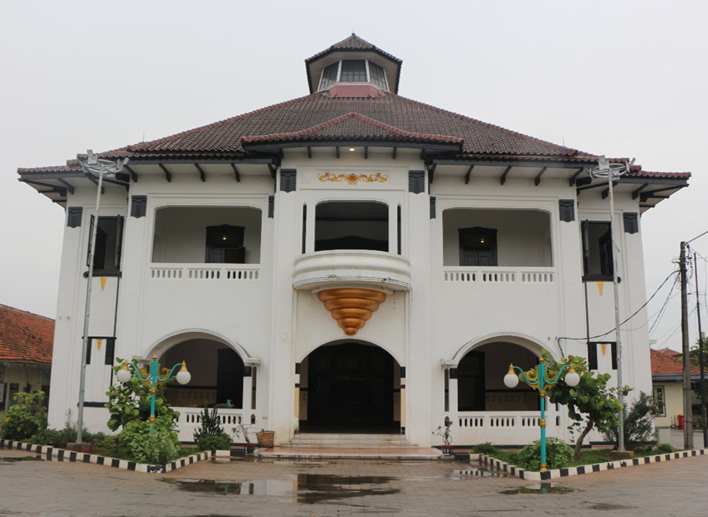
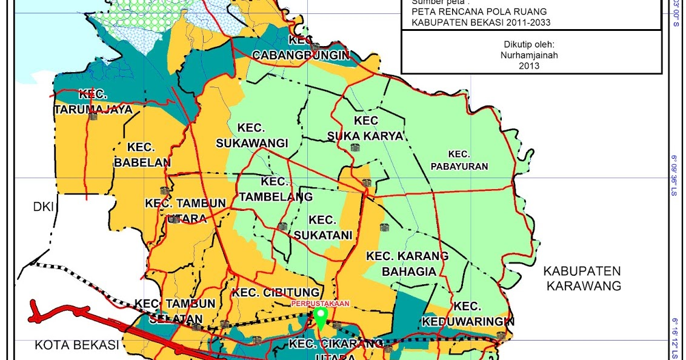
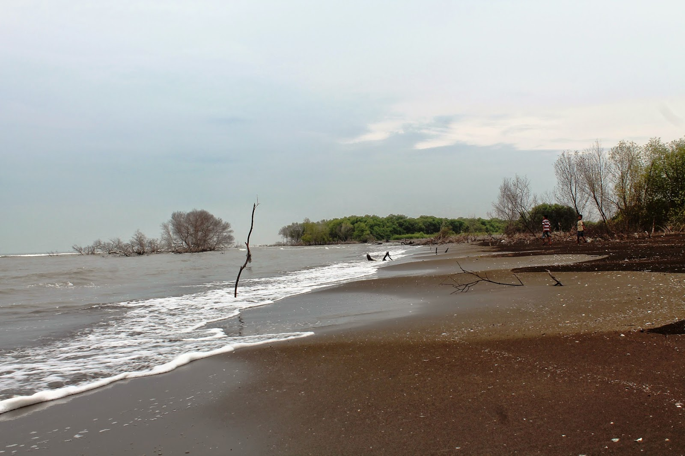
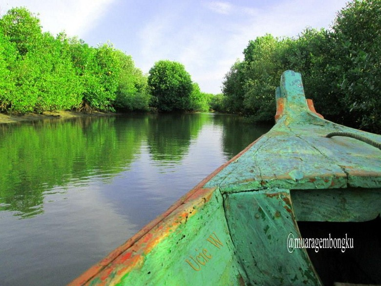
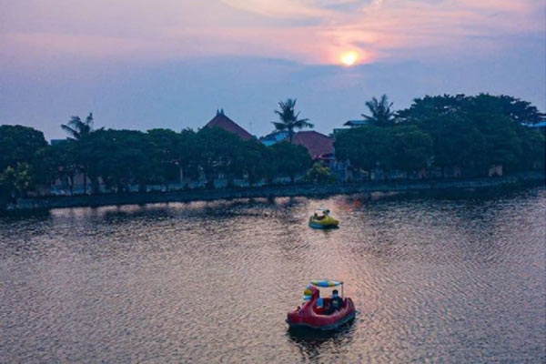
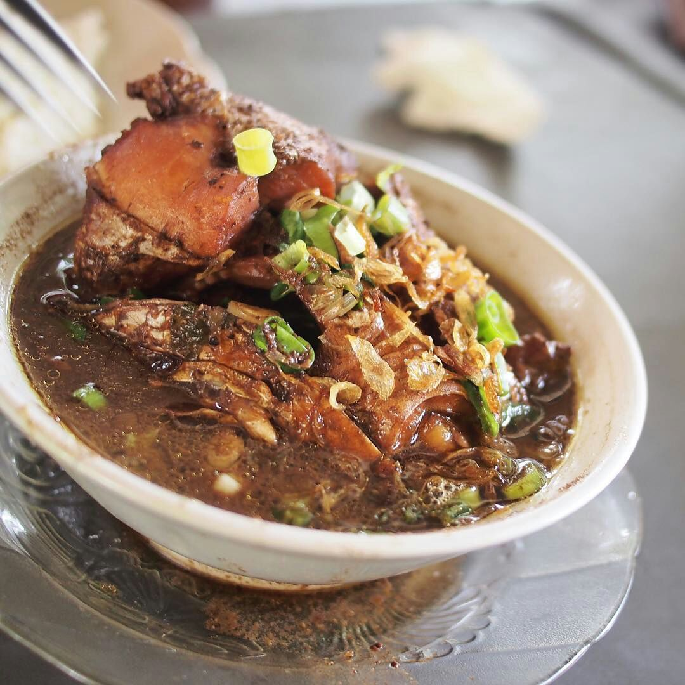
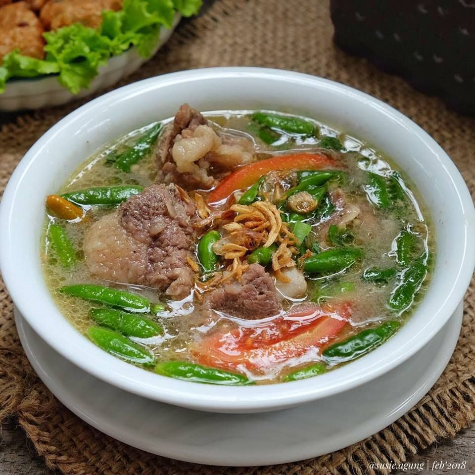

SEJARAH

Kabupaten Bekasi secara resmi dibentuk dan ditetapkan tanggal 15 Agustus 1950 sebagai Hari Jadi Kabupaten Bekasi. Selanjutnya pada tanggal 2 April 1960 Pusat Pemda Bekasi semula dipusatkan di Jatinegara (sekarang Markas Kodim 0505 Jayakarta, Jakarta) dipindahkan ke gedung baru Mustika Pura Kantor Pemda Bekasi yang terletak di Bekasi Kaum JI. Jr. H. Juanda.
Wilayah Kabupaten Bekasi dengan luas 1,484,37 km2 terdiri dari daratan dan pantai memiliki jumlah penduduk sekitar 2,8 juta jiwa yang tersebar di 23 kecamatan, 187 desa/kelurahan. Luas kawasan hutan mangrove sebesar 700 Ha dan memiliki 12 DAS besar maupun kecil. Selain kekayaan alam minyak bumi yang sedang di expolarasi oleh Negara, di wilayah Kabupaten Bekasi juga ada 3300 perusahaan skala besar baik PMA maupun PMDN yang menyerap sekitar 1 juta-an lapangan pekerjaan. Namun ternyata secara
LETAK GEOGRAFIS

geografis, geologis, hidrologis dan klimatologis Kabupaten Bekasi menurut Indeks Rawan Bencana yang dirilis oleh BNPB menduduki posisi 81 dari 400an Kabupaten/Kota di Indonesia.
Potensi bahaya bencana di Kabupaten Bekasi adalah banjir, kekeringan, puting beliung, longsor, kebakaran, kegagalan teknologi/ transportasi, wabah/ epidemi penyakit ( Avian Influenza, DBD dsb). Arus utama gejala alam sekarang adalah perubahan iklim, penanggulangan bencana langkah-langkah dan perencanaannya dikaitkan dengan perubahan iklim. 75 % bencana di dunia terkait iklim.
WISATA
Kabupaten Bekasi sendiri juga mempunyai berbagai tempat wisata yang tidak kalah menarik, beberapa tempat wisata yang ada di Kabupaten Magetan adalah sebagai berikut
Pantai Muara Beting

Pantai Muara Beting terletak di Desa Pantai Bahagia, Kecamatan Muara Gembong, Bekasi, Jawa Barat. Jarak pantai ini dari pusat kota Bekasi 48 kilometer atau sekitar 2 jam perjalanan yang dapat ditempuh dengan kendaraan pribadi. Akses jalanya cukup mudah dengan jalan yang begitu lebar.
Hutan Mangrove Muara Gembong

Indahnya Pantai Muara Gembong, objek wisata alam yang terletak di utara Bekasi, Jawa Barat ini, menjadi salah satu alternatif destinasi wisata yang menarik untuk dikunjungi. Wisata bahari ini menyajikan keindahan eksotis dengan suasana khas lautan lepas. Dan untuk mencapai lokasi pantai ini, Traveler harus naik perahu yang memakan waktu sekitar 15 menit dari Kampung Beting Muara Gembong. Selama perjalanan, suguhan keindahan hutan mangrove yang menghijau dibibir sungai, menjadi pemandangan seru yang wajib dinikmati. Selain mendapatkan pemandangan yang bagus serta udara yang sejuk ini, akan banyak hal-hal unik lainnya dan mengesankan yang akan ditemui dalam perjalanan ini.
Danau Marakash

Danau Marakash menjadi tempat rekreasi keluarga di Bekasi yang rekomended untuk dikunjungi ketika hari libur tiba. Bekasi yang menjadi salah satu kota tersibuk di Indonesia pastinya menyajikan suasana bising akan aktivitas perkotaan.
Akhir pekan memang waktu yang tepat untuk merelaksasi jiwa serta pikiran dengan berlibur. Salah satu tempat piknik di Bekasi yang cocok untuk wisata keluarga yaitu Danau Marakas. Danau indah dengan berbagai macam spot wahana rekomended yang akan memanjakan kunjungan liburan anda.
KULINER
Siapa bilang di Bekasi tak ada tempat makan yang enak? Nyatanya banyak sekali tempat makan di Bekasi yang cocok jadi tujuan wisata kuliner di kota Bekasi bersama para rekan dan sahabat.
Sayur Gabus Pucung

Kuliner Bekasi yang pertama adalah sayur gabus pucung. Sayur gabus pucung adalah kuliner khas Betawi yang terkenal di Bekasi.
Sayur gabus pucung berisi ikan gabus yang digoreng, lalu dimasak dengan kuah hitam yang terbuat dari campuran kluwak. Cita rasa sayur gabus ini sedikit pedas, dan sangat disukai oleh masyarakat Bekasi.
Sop Janda

Kuliner Bekasi yang ketiga adalah sop janda. Nama sop janda mungkin terdengar unik di telinga kebanyakan orang, Nama sop janda sendiri sebenarnya berasal dari singkatan "Jawa-Sunda", yang mana kuliner ini cukup terkenal di Bekasi dengan cita rasanya yang gurih nan pedas. Sop Janda terdiri dari daging dan tulang sapi dipadukan dengan kuah panas yang segar. menggugah selera.
Bandeng Rorod
Kuliner Bekasi yang ke lima adalah bandeng rorod. Dilihat dari namanya, Tentu sudah bisa menebak bahwa kuliner Bekasi yang satu ini terbuat dari ikan bandeng,
Ikan bandeng yang digunakan untuk kuliner ini biasanya menggunakan jenis ikan bandeng tanpa duri. Ikan bandeng lantas diberi racikan bumbu khusus yang menggugah selera. Bandeng rorod kerap dijadikan sebagai oleh-oleh khas Bekasi.